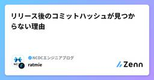
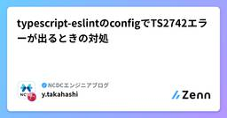

NCDCエンジニアブログのフィード
https://zenn.dev/p/ncdc
NCDC株式会社( https://ncdc.co.jp/ )のエンジニアチームです。 募集中のエンジニアのポジションや、採用している技術スタックの紹介などはこちら( https://github.com/ncdcdev/recruitment )をご覧ください！ ※エンジニア以
フィード

リリース後のコミットハッシュが見つからない理由
NCDCエンジニアブログのフィード
問題の概要アプリケーションのリリースで以下のワークフローを使用していました。np でバージョンタグを作成GitHubにリリースを作成CDパイプラインが実行されるビルドプロセスでGitタグとコミットハッシュを取得し、vX.Y.Z-{shorthash} 形式でアプリに埋め込むところが、リリース後にアプリのバージョン情報を確認すると、表示されているハッシュに該当するコミットが Git ログで見つからないという問題が発生しました。アプリケーションの動作自体は正常で、実際に該当タグのコミットが使用されているのですが、なぜかハッシュが一致しないという不可解な状況でした。...
4時間前

typescript-eslintのconfigでTS2742エラーが出るときの対処
NCDCエンジニアブログのフィード
'default' の推論された型には、'.pnpm/@typescript-eslint+utils@8.37.0_eslint@9.31.0_typescript@5.8.3/node_modules/@typescript-eslint/utils/ts-eslint' への参照なしで名前を付けることはできません。これは、移植性がない可能性があります。型の注釈が必要です。ts(2742)何を言っているんだという感じのエラーですが、推論された型が複雑すぎてヤバいよ！ということらしいです。重要なのは「型の注釈が必要です。」の部分で、'default'の型はコレ！と言えればよいよう...
2日前

【Swift】実行環境毎に異なる設定値を指定したい
NCDCエンジニアブログのフィード
Xcode の Configuration 設定にて、Debug と Release とで BundleID やアイコン等、異なる値を設定する手順を記載&メモしていきます。※ 検証時の Xcode バージョン: 16.2 やったこと適当なフォルダ階層に、.xcconfig ファイルを実行環境毎に作成します。新しいファイルをテンプレートから作成します。検索で "config" と入力すれば出てきます。Debug と Release とで実行環境を分けたいので、それぞれの "xcconfig" ファイルを作成します。今回の例では、Debug.xcconfig と...
13日前
【Swift】Xcode で設定値の変更保存が一切出来なくなった時の対応方法
NCDCエンジニアブログのフィード
【事象】Xcode を操作していると、ふとした時に設定値の変更保存が一切できなくなる現象が発生しました。なにやら「プロジェクトがロックされているので、ロック解除しますか？」とのこと。もちろん保存したいので "UnLock" を選択するも、直後に「権限が無いからロック解除できませんでした」とのエラーに。この状態では設定値の変更の保存はもとより、 Xcode を終了することもできずに強制終了するしか手立てがない状態となってしまいます。なぜ発生したかの原因は不明ですが、エラー文にあるように、"project.pbxproj" の書込み権限を追加してみましょう。 【対応】...
17日前
Figma Dev Modeの線は「外側」扱いでCSS表示される
NCDCエンジニアブログのフィード
要点Figmaにおける線の位置のデフォルトは内側Dev ModeのCSS出力は、線の設定に関わらず要素の外側外側以外を設定している場合、線の太さだけサイズが大きくなるこれにより起こり得るデザインと実装のズレについて、チーム内で認識を合わせておくことが重要 Figmaにおける線のデフォルトは内側Figmaでは、オブジェクトの線の位置を3種類から選択できます。内側外側中央（本記事では取り上げません） 内側デフォルトでは内側が指定されています。線がオブジェクトの幅・高さの内部に含まれます。例として、100pxの正方形を作成し、1pxの線を設定し...
18日前
LLMに開発を任せる時こそ、DDDのユビキタス言語を作ろう
NCDCエンジニアブログのフィード
この記事で言いたいことどんなプロジェクトでも、ユビキタス言語を作ろう！ 生成AIと「言語」モデルいわゆる生成AIが加速度的に進化していく流れに乗って、ソフトウェア開発の進め方も大きく変わりつつあります。1年前の生成AIは補助的なサポート過ぎないケースがほとんどでした。しかし、今では人間は指示を出すだけ、コーディングは全て生成AIに任せる。といったケースが急激に増えています。さて、この生成AIと呼ばれている存在は「AI」というからにはさぞかし論理的な思考が得意だろうと思ってしまいがちですが、全くそんなことはありません。というのも、生成AIとしてよく上げられるGPTやCla...
19日前
UX重視のアジャイル開発で使える生成AIプロンプト集
NCDCエンジニアブログのフィード
アジャイル開発のサイクルを回しながら、一貫したユーザー体験（UX）を提供するためのAIプロンプト集です。開発の準備から各スプリントイベントに沿って、コピー＆ペーストしてすぐに使える形で整理しました。 Phase 0: 準備・計画フェーズ（スプリント0）目的： 本格的な開発スプリントを始める前に、プロダクトの基盤とチームの共通認識を固めます。 1. プロダクトの「なぜ」と「誰のため」を定義するプロダクトの羅針盤となる、ユーザー像と提供価値を明確にします。 ペルソナ作成プロンプトあなたはプロのUXリサーチャーです。以下のユーザー調査データから、このサービスの主要なペル...
23日前
【Swift】URLComponentsのqueryにパーセントエンコード済みの値を渡したい
NCDCエンジニアブログのフィード
問題URLComponents を使って URL を生成する際、クエリパラメータにパーセントエンコード済みの文字列を渡すと、意図せず 二重エンコードされてしまいます。コンソールで確認してみると、URL を生成する際に URLComponents が自動的にパーセントエンコードを行っており、意図しない文字列（2 重エンコード）となってしまっていました。ex./ → %2F → %252Ffunc createURL() -> URL { let baseURL = "https://example.com" let parameters = [ ...
25日前
LangChainのOpen Deep ResearchをAmazon Bedrock経由で使う
NCDCエンジニアブログのフィード
はじめにLangChainのOpen Deep ResearchをAmazon Bedrock経由で使ってみるときにエラーがいくつか出て引っかかったので備忘録として書いておきます。2025年6月20日時点（最新コミットID：e5a5160a398a3699857d00d8569cb7fd0ac48a4f）のコードでは以下の変更で動かせることを確認しています。ちなみに本ライブラリをテーマにこちらのLT会でお話ししました（資料）。 前提マルチエージェント型のみ記載Web検索ツール：Tavily使用するLLM：Bedrock経由のClaude 3.5 Haiku上記リポ...
25日前
MCPサーバーを使うなら Prompt Caching が大切だと思い知った話
NCDCエンジニアブログのフィード
MCPサーバーと連携するアプリ使ったら、利用料が高かったMCPサーバーと連携するチャットアプリを作っていたのですが、「開発中でほぼ自分しか使ってないのに生成AIの利用量がやたら高くね？」と思いました。ClaudeのMaxプランが月額100ドルで使い放題であることを考えると、開発中に軽く使っただけで数千円かかるアプリなんでコスパ悪すぎて、まともに使えないですね。!今回取り上げるアプリはLangChain MCP Adaptersを使って実装しています。MCP connectorなどを使えば最初からより効率的にMCPを活用できる可能性はあります。 調べてみたなぜそんな...
1ヶ月前
CursorのPrivacy Policyが改悪されそう
NCDCエンジニアブログのフィード
概要2025/06/13に更新されているPrivacy Policyで、Privacy Modeを使用していてもCursorがコードの一部を保存する可能性があることが明記されました。Cursor may store some code data to provide extra features.https://www.cursor.com/ja/privacy-overview 背景ふとCursorの管理ページを見ていると以下のメッセージがきていることに気づきました。Privacy Modeが切り替わるのか、とよくよく調べてみると実質改悪なんじゃないかということが...
1ヶ月前
Claudeの実行ログをBigQueryへ取得する ( Google Cloud / Vertex AI )
NCDCエンジニアブログのフィード
Google Cloud上のClaudeの呼出履歴をBigQueryに取得することが、簡単にできるということを最近知ったのでそのメモです。やり方ですが、こちらのドキュメントに従って設定するだけです。https://cloud.google.com/vertex-ai/generative-ai/docs/multimodal/request-response-logging?hl=ja#foundation-modelsこれで終わりだと記事として短すぎるので、蛇足になってしまいますが自分用メモを兼ねてもう少し詳しく書いていこうと思います。 設定方法の説明Claude Sonn...
1ヶ月前
統計検定2級取得に向けてやったこと
NCDCエンジニアブログのフィード
記事の内容統計検定2級を受検して、無事合格することができました。仕事柄いかにもITぽい名前の検定を受けることが多いのですが、久しぶりに趣の異なる検定を受けてきました。個人的にはそれなりに時間費やしたので記事にしようと思いました。ちなみに私の受検スタンスとしては完璧に準備するという感じではなく、合格ボーダーに超えられればバンザイというスタンスですのでご了承ください。 受検前のわたし数学きらい統計知らないテストの偏差値いいとかってよくいうけど50より上ならいいんだろ？ぐらいにしかわかってないそのため統計に関してほぼ0と言っても過言ではないスタートラインでした。 ...
1ヶ月前
【Swift】VSCodeやCursorで快適なSwift開発ライフを送りたい
NCDCエンジニアブログのフィード
「新たに Swift 案件やることになったが Xcode は慣れず使いづらい」「使い慣れた VSCode で Swift 開発したい」「Xcode プロジェクトを VSCode で開いても大量のエラーが出て見るに耐えない」そんな悩みの１つの解決策として、 SweetPad という VSCode 拡張機能があります。SweetPad を使うことで、VSCode や Cursor で基本的な Swift プロジェクト（Xcode プロジェクト）開発ができるようになります。https://sweetpad.hyzyla.dev/※ 以降、VSCodeと記載箇所は（Cursor含む...
1ヶ月前
エンジニアじゃない人向けのLLMとの付き合い方
NCDCエンジニアブログのフィード
はじめに毎日LLMで仕事をしています。2年前の作業スタイルがもう思い出せません。未経験のタスクに着手するハードルはかなり下がりました。LLMは得意なこと、不得意なことがあります。日進月歩なので、変わっていくところもありますが、原理的に大きく変わらないところもあります。この記事ではそういう「考え方」について書いていきます。エンジニアじゃない方がLLMの気持ちをちょっと理解して、日頃のコミュニケーションに役立てていただければ幸いです。!LLMには様々な活用方法がありますが、本記事では主にChatGPT、Claude、Geminiといった、チャットインターフェースを通じて利用で...
1ヶ月前
【TypeScript】satisfies演算子
NCDCエンジニアブログのフィード
そんなのあったんだーと最近知ったsatisfies演算子について。 satisfiesって何？satisfies は「ある値が特定の型を満たしているかチェックする」ための演算子です。TypeScript4.9で導入されました。（3年前か...）https://devblogs.microsoft.com/typescript/announcing-typescript-4-9-beta/#the-satisfies-operatorconst array1: (string | number)[] = [1, 2, 3];const array2 = [1, 2, 3] s...
2ヶ月前
TypeScriptで引数によって戻り値の型を変えてみた【条件付き型 × ジェネリクス】
NCDCエンジニアブログのフィード
本記事では、条件付き型（Conditional Types） と ジェネリクス を使って引数の値に応じて返す型を変える方法を紹介します。 やりたいこと例えば "dog" という引数が渡されたら Dog 型を返し、"cat" の場合は Cat 型を返すような関数を作りたい。 条件付き型で定義するまずは型を定義します。type Dog = { kind: "dog"; bark(): void };type Cat = { kind: "cat"; meow(): void };export type AnimalType<T> = T extends "do...
2ヶ月前
Azure VMでDockerを使う時はサイズに気をつけましょう
NCDCエンジニアブログのフィード
Docker Desktopが使えないAzure上に Standard B2s のVM（Windows）を立てて、Docker Desktop をインストールしたところ、docker run hello-world が動かず、docker info の Server セクションもエラー。エラー文Server:error during connect: Get "http://%2F%2F.%2Fpipe%2FdockerDesktopLinuxEngine/v1.49/info": open //./pipe/dockerDesktopLinuxEngine: The sys...
2ヶ月前
null と undefinedは使い分けした方がいい？
NCDCエンジニアブログのフィード
はじめにnullはその開発者から100億ドルの損害だと言われてるそうです。https://www.infoq.com/presentations/Null-References-The-Billion-Dollar-Mistake-Tony-Hoare/同じ値がないという意味なのにjavascript等では二つも用意されているのが不思議でこの際ちゃんと理解しようと思い調べました。コードを書くときにtext===undefinedやtext===nullなどで、曖昧なコードが増えるのも問題です。 nullは自然発生しない例えば以下のようなコードがあった時、コンソールにはu...
2ヶ月前
[TS TIP] アンビエント宣言とネームスペース
NCDCエンジニアブログのフィード
最初に普段あまり意識することのない「アンビエント宣言」と「namespace」について触れる機会があったので、少し調べた内容を噛み砕いて書き留めておこうと思います。実際知らなくても困ることはないですが、知っていて損はないなと感じたので、気になる方は読み進めていただければと思います。では始めます。 アンビエント宣言（declare）とは？一言で表すと「この変数や関数、型などは外部にすでに存在しているよ！」という宣言のことです。Javascriptのコードには存在しない（型が）けど、「型情報としては必要」なものを Typescript に伝えるための構文です。例えば、外...
2ヶ月前